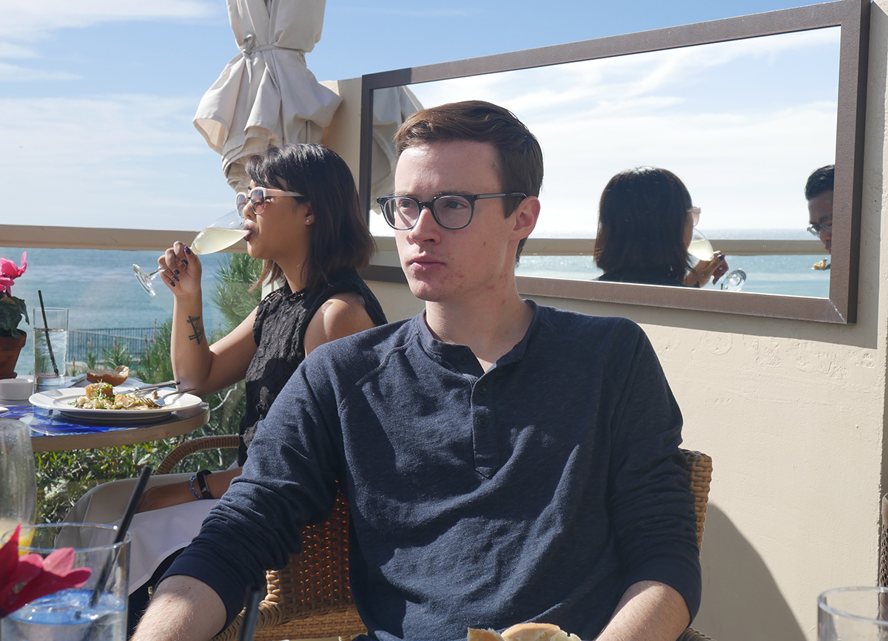
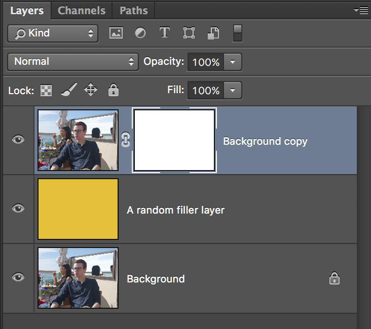

Welcome, young padawan.
Tonight, we splice realities.
Welcome to Jenny's Photo Manipulation Workshop! This tutorial will quickly cover the basics of Photoshop through a fun exercise, then we'll try it ourselves. Here are key topics we will cover:
To start, let's create a new Photoshop document. Use default settings (for Document Type, put "Default Photoshop Size"), or create a 7 by 5 in canvas at a resolution of 300 pixels/inch.
1. Layer Masks
First, let's choose one of these random stock photos I found on the internet. Right click and copy one of them to your clipboard.

Make another new document in Photoshop, paste this photo in, and merge it down with your background layer. Duplicate this background layer to make a "Background copy" layer. In between these two, create a filler layer with a solid color.
On the top-most "Background copy" layer, create a clipping mask.

With the mask selected, equip the Brush tool (b). Anything you paint on this mask in black will be hidden. Anything white will still show through!
When you're done, you can right click on the "Background copy" layer > Apply Layer Mask, and delete all the other layers. Go to Image > Trim to crop it, and then save your cutout as a PNG! You can now close this document.
2. Adjustment Layers
For your convenience, I've cut out the stock models I found randomly on the internet for you. Yeah, you're welcome.
Let's take the stock models I found randomly on the internet and drop them into this intimate Obi Wan and Yoda scene in The Phantom Menace. Copy and paste this image into our original document.
Paste the stock model cutout onto the scene. If you go to Window > Adjustments, a dialog should show up with a lot of different kinds of adjustment filters. I'll be using Curves and Hue/Saturation, but feel free to play around. Do what looks right.
I want to apply Curves and Hue/Saturation to just our random stock model, not the background. To do this, hold Option (alt), hover in between the adjustment layer and our model's layer, and click. This selectively applies the top layer to only the layer below it!
You can add adjustments on top of everything to give the overall image a cohesive atmosphere.
3. Manipulation
There are a few things we can do to mess with our photos even more. We can...
...Add more things
Just because we totally can, let's drop this parrot in there somewhere. I love technology.

...Subvert emotions
Using the liquify tool and a little creativity, anything is possible. Filter > Liquify.
...Hurt our friends
Using blending modes, we can overlay certain colors and shadows to dramatize the situation.
...Really hurt them
I love technology.
You can use this circuit board image (or any texture) and Photoshop it into your stock models.

Final Products

Powerful you have become. Think outside of this world.
Below are the finished Photoshop files of our manipulations for your reference.